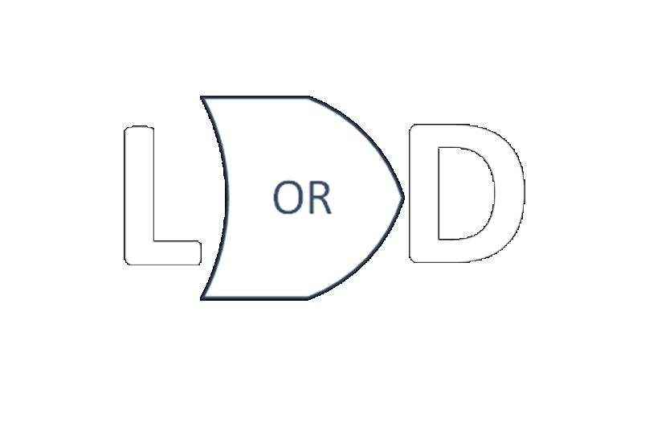
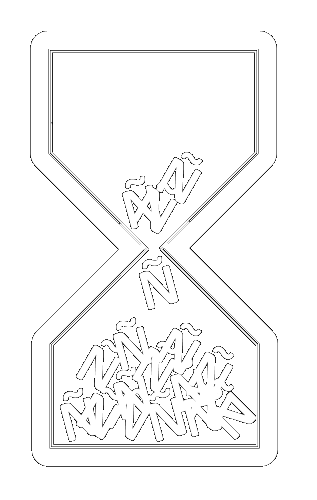
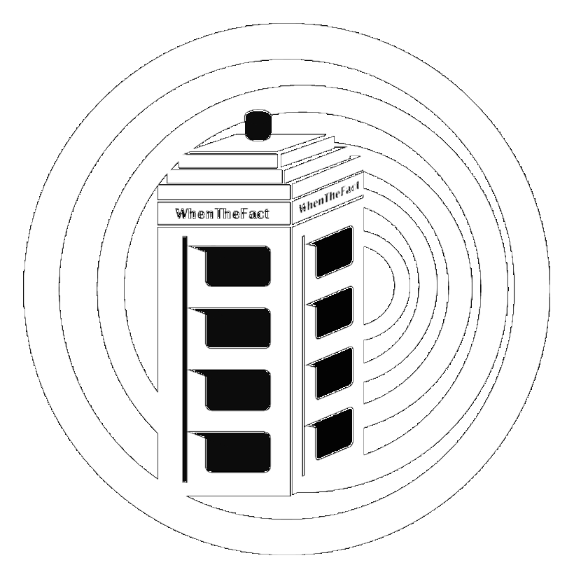
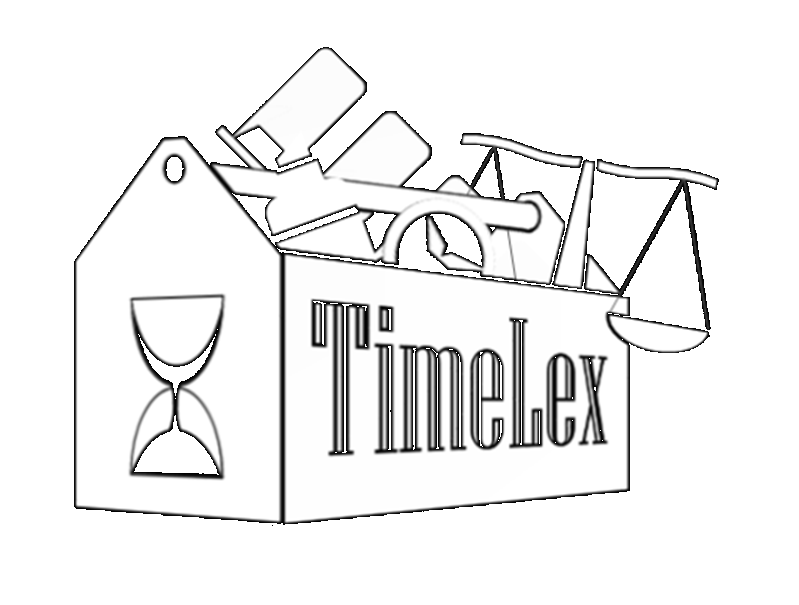
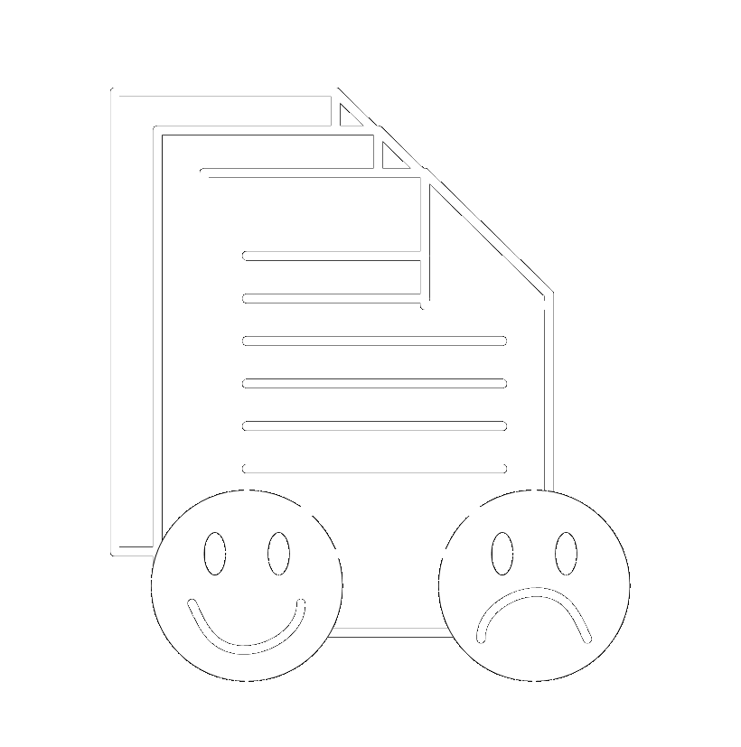
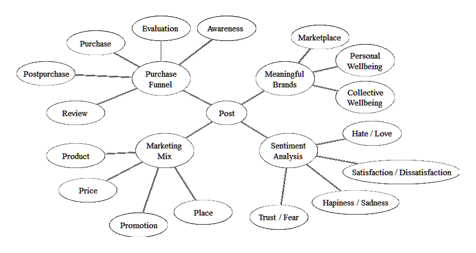
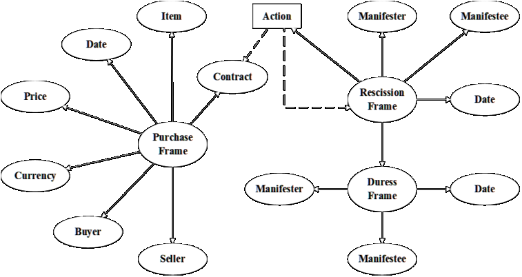

LawORDate

LawORDate is a service that handles legal references in texts in Spanish in order to improve temporal tagging.
Añotador

Añotador is a temporal tagger for English and Spanish able to work both for general or legal texts.
WhenTheFact

WhenTheFact is finds relevant events in judgments from European Courts, building a timeline from them.
EventsMatter Corpus

EventsMatter is a corpus of courts from the European COurt of Human Rights annotated with events.
TimeLex

TimeLex is a suite of services for processing texts in the legal domain from the temporal perspective.
SAB/MAS corpus

Corpus of tweets in Spanish annotated with emotions and their stage within the purchase funnel.
SAB vocabulary

Vocabulary of the different aspects and emotions used to annotate the MAS and the SAB corpora.
TempCourt corpus

Corpus of legal decisions from three different sources in English annotated with temporal expressions.
Hourglass corpus

Dataset of sentences in Spanish from different registries and countries annotated with temporal expressions.
ContractFrames

Tool able to extract events from English texts presenting the lifeycle of real-state contracts.
fromTimeToTime Ontology

Ontology able to represent and link different time and event annotation formats and representation options.
FromTimeToTime converter